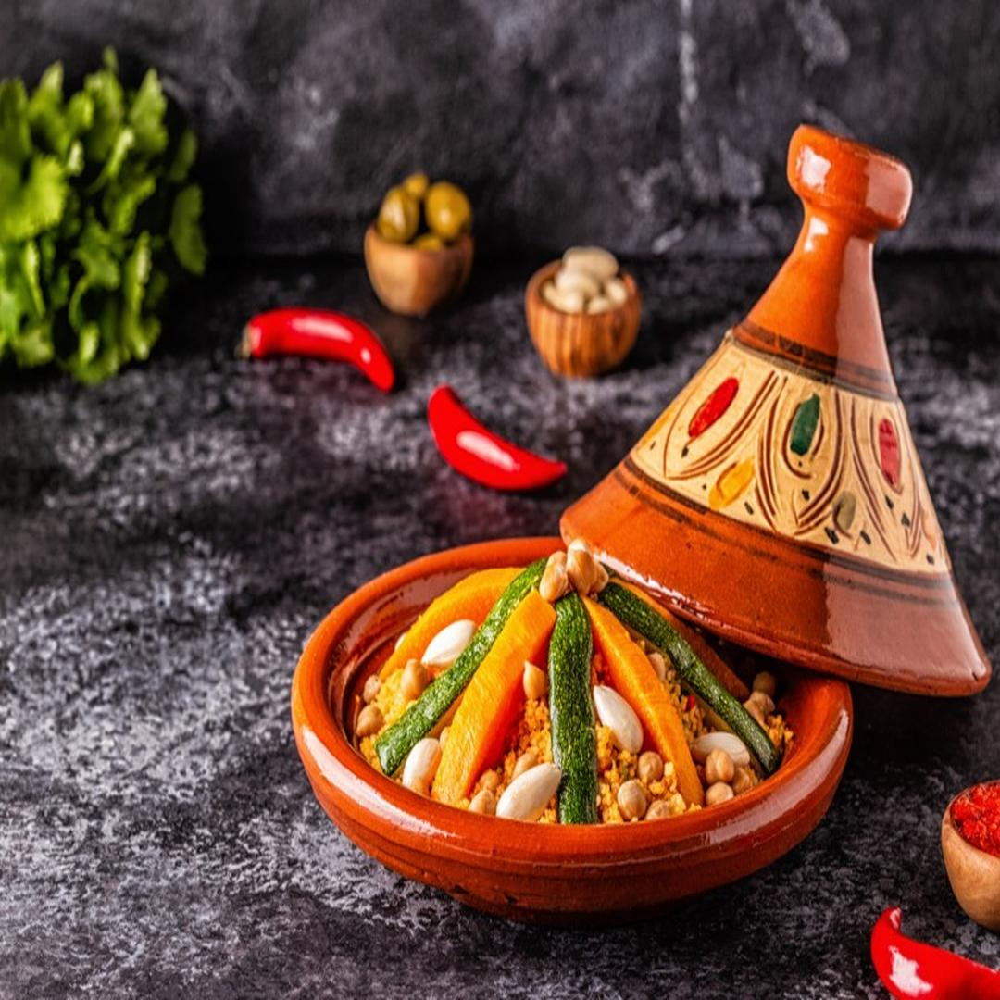

La recette du tajin

tajin
plat
60min
moyen
ingrédiants
Étape 1
Verser 3/4 de cuillère à soupe d'huile dans le plat à tajine directement posé sur le feu ou la
plaque.
Étape 2
Lorsque l'huile est bien chaude, faire revenir la viande de chaque côté (environ 10 min).
Étape 3
Baisser un peu le feu et placer les légumes, lavés et découpés grossièrement, en pyramide sur la
viande, des plus fermes aux plus tendres (pommes de terre, puis carotte, puis courgettes, puis
oignons), en les intercalant de cumin, 14 épices, sel et poivre.
Étape 4
Arroser d'un peu d'eau, saupoudrer de safran jaune, pour donner de la couleur et déposer les olives
vertes.
Étape 5
Couvrir et laisser cuire à feu doux, pendant 30 mn.
Etape 6
Au bout de ce temps, placer sur les légumes cuits, les tomates coupées en morceaux, couvrir et
laisser cuire encore 15mn.
Étape 7
Servir chaud, directement sur la table, accompagné de thé et de pain sans levain.
recettes similaires

couscous
plat
60min
moyen
Étape 1
Faire revenir le poulet à feu moyen pour qu'il soit un peu doré.
Étape 2
Pendant ce temps, peler et couper les légumes : couper les carottes en 2 , puis dans le sens de la
longueur. Idem pour les courgettes. Couper les oignons en lamelles et les pommes de terres en 4.
Étape 3
Mettre les légumes avec le poulet, rajouter les épices à tajine et le cumin. Mettez également un peu
d'eau (3/4 verre d'eau).
Étape 4
Laisser cuire environ 1 heure et voilà, c'est prêt !